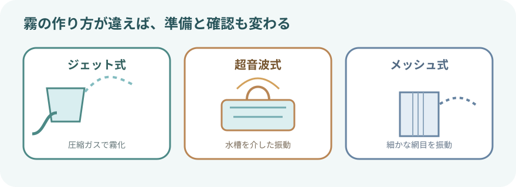
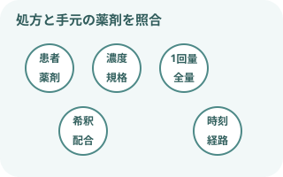
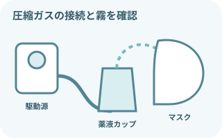
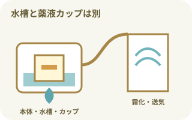
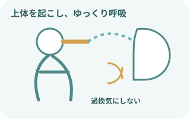
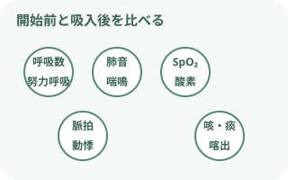
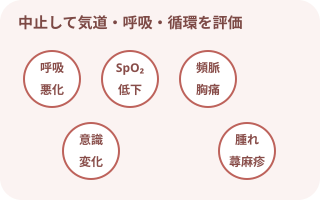
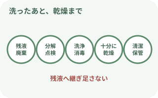

最初に押さえる注意事項
薬剤と機器の両方を確認する
- 患者、薬剤名、濃度・規格、1回量、希釈液、投与時刻・回数、投与経路を処方と照合する。
- 複数薬剤を自己判断で混ぜない。配合可否、調製後の使用時間、保存方法を薬剤師・電子添文・院内手順で確認する。
- ジェット式、超音波式、メッシュ式では構造と対応薬剤が異なる。使用可能な薬液、最少・最大充填量、組み立て方を機種ごとに確認する。
- 圧縮空気と酸素のどちらを駆動源にするかは指示と機器仕様に従い、接続先を取り違えない。
患者から離れない
- 吸入開始後は、霧の発生、呼吸状態、SpO₂、脈拍、表情を確認する。
- 呼吸困難や喘鳴が増える、動悸・振戦が強い、意識や酸素化が悪化する場合は中止して応援を呼ぶ。
- マスクやマウスピースを保持できない患者、嘔吐・誤嚥リスクが高い患者は体位と見守り方法を調整する。
ネブライザーの種類

| 方式 | 霧を作る仕組み | 実施前の確認 |
|---|---|---|
| ジェット式 | 圧縮ガスで薬液を霧化 | 流量、駆動源、薬液カップ、ホース、噴霧状態 |
| 超音波式 | 水槽を介した超音波振動で霧化 | 水槽の液、薬液カップ、充填量、タイマー、使用可能薬剤 |
| メッシュ式 | 細かな網目を振動させて霧化 | メッシュの詰まり、取り付け方向、対応薬剤、残量 |
薬剤の確認と調製

準備の中心はダブルチェック
- 薬剤名だけでなく、濃度・規格と容器単位まで読む
- 1回量と希釈後の全量を分けて確認する
- 開封日時、使用期限、外観、保管条件を確認する
- 混合時は配合変化と投与順序を確認する
- 清潔な手技で薬液カップへ入れ、残液へ継ぎ足さない
よく使われる薬剤例
- プロカテロール（メプチン）：気管支拡張薬。処方された規格・量を確認し、動悸、頻脈、不整脈、振戦、頭痛などを観察する。
- ブロムヘキシン（ビソルボン）：気道粘液溶解薬。指定された希釈と配合可否を確認し、咳嗽、喘鳴、呼吸困難、痰量の一時的増加などを観察する。
吸入前の観察
- 体位・理解：座位やファウラー位が可能か、説明を理解してマスク・マウスピースを使えるか
- 呼吸：呼吸数、深さ、リズム、努力呼吸、胸郭運動、呼吸困難、チアノーゼ
- 肺音：左右差、喘鳴、湿性ラ音、呼吸音減弱
- 酸素化：SpO₂、酸素投与方法・流量、普段の目標値
- 咳・痰：咳嗽力、痰の量・色・粘稠度、自己喀出できるか
- 循環・全身：脈拍、血圧、意識、表情、動悸、振戦、発熱、アレルギー歴
ジェット式ネブライザーの手順

圧縮ガスの流れを確認する
- 本体または配管からホース、薬液カップ、マスク・マウスピースへ正しく接続
- カップを傾けすぎず、噴霧が安定しているか確認
- 患者の顔に合うインターフェースを選び、漏れを減らす
- 処方と機器を確認する
患者、薬剤、量、希釈、時刻、駆動源、機器の型式を照合する。
- 呼吸状態を評価し、説明する
呼吸・肺音・SpO₂・脈拍を確認し、目的と所要時間の目安を伝える。
- 薬液を調製して組み立てる
清潔に薬液カップへ入れ、各部品とホースを確実に接続する。
- 体位とインターフェースを整える
禁忌がなければ上体を起こし、マウスピースは口唇で密閉。マスクは鼻と口を覆う。
- 噴霧を開始する
指定された流量・駆動源で霧を確認し、ゆっくり自然に呼吸してもらう。
- 終了と回復を確認する
機器の終了目安と指示に従って停止し、呼吸・肺音・SpO₂・脈拍・症状を再評価する。
超音波式ネブライザーの手順

水槽と薬液カップを混同しない
- 本体、水槽、薬液カップ、蓋、ホース、マスクを型式どおりに組み立てる
- 水槽に使用する液と量は機器説明書に従う
- 薬液は別の薬液カップへ、処方・機器指定量を入れる
- 本体と部品を点検する
電源、コード、振動部、カップ、蓋、ホース、マスクの破損・汚染・水分残りを確認。
- 水槽を準備する
指定された液を、使用機種の規定線・規定量まで入れる。
- 薬液を準備する
薬液カップを取り付け、処方量と機器の充填条件を満たすように調製する。
- 蓋・ホース・マスクを接続する
接続の緩み、屈曲、外れがないことを確認する。
- 噴霧量と時間を設定する
機器説明書と指示に従って設定し、霧が安定していることを確認する。
- 患者を観察しながら実施する
呼吸、SpO₂、脈拍、表情、咳・痰を観察し、終了後に効果と副作用を評価する。
薬液を気道へ届ける吸い方

密着と無理のない呼吸
- 可能なら上体を起こし、胸郭が動きやすい姿勢にする
- マウスピースは歯で軽くくわえ、口唇を閉じる
- マスクは鼻と口を覆い、眼へ霧が流れないよう調整する
- 過換気にならないよう、ゆっくり自然な呼吸を続ける
- 咳が出たら痰を出せるよう休憩し、必要性を再評価する
吸入ステロイド薬を使用した場合は、薬剤の指示に従って吸入後にうがい・口腔内洗浄を行う。うがいが難しい場合の方法も薬剤ごとに確認する。
吸入中・吸入後の観察

開始前の値と比べる
- 呼吸数、呼吸パターン、努力呼吸、呼吸困難
- 肺音、喘鳴、湿性ラ音、左右差
- SpO₂、酸素投与条件、チアノーゼ
- 脈拍、血圧、動悸、不整脈、振戦
- 咳嗽、痰の量・色・粘稠度、喀出のしやすさ
- 皮疹、口腔・咽頭刺激、悪心、表情、訴え
実施時刻、薬剤・量・希釈液、機器、駆動源・流量、実施時間、吸入前後の変化、副作用、痰の変化、中止理由を記録する。
中止して応援を呼ぶサイン

「吸入中だから様子を見る」で続けない
- 呼吸困難・喘鳴・努力呼吸の急な悪化
- SpO₂低下、チアノーゼ、無呼吸
- 強い動悸、頻脈、不整脈、胸痛、著明な振戦
- 意識低下、強い不安・興奮、会話困難
- 顔面・口唇の腫れ、蕁麻疹、急な咳などの過敏症状
- 嘔吐、誤嚥、マスクを外せないなど安全に継続できない状態
吸入を止め、機器を外して気道・呼吸・循環を評価する。酸素投与や救急対応は患者ごとの指示と院内手順に従い、薬剤名・量・開始時刻・症状をすぐ報告する。
終了後の片づけと感染対策

残液を継ぎ足さず、乾燥まで行う
- 手指衛生を行い、残った薬液は院内手順に従って廃棄する
- 患者ごと・使用ごとの交換範囲を確認する
- 再使用部品は機器説明書に従って分解、洗浄、消毒する
- すすぎが必要な呼吸療法器具には、指定された清潔な水を使う
- 水分を残さず十分に乾燥させ、清潔な場所で保管する
- ホース内部の結露、ノズル・メッシュの詰まり、部品の亀裂を点検する